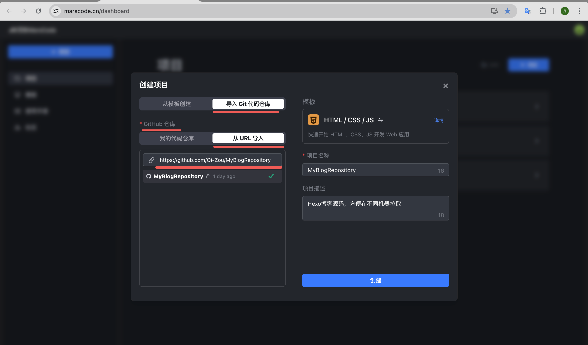
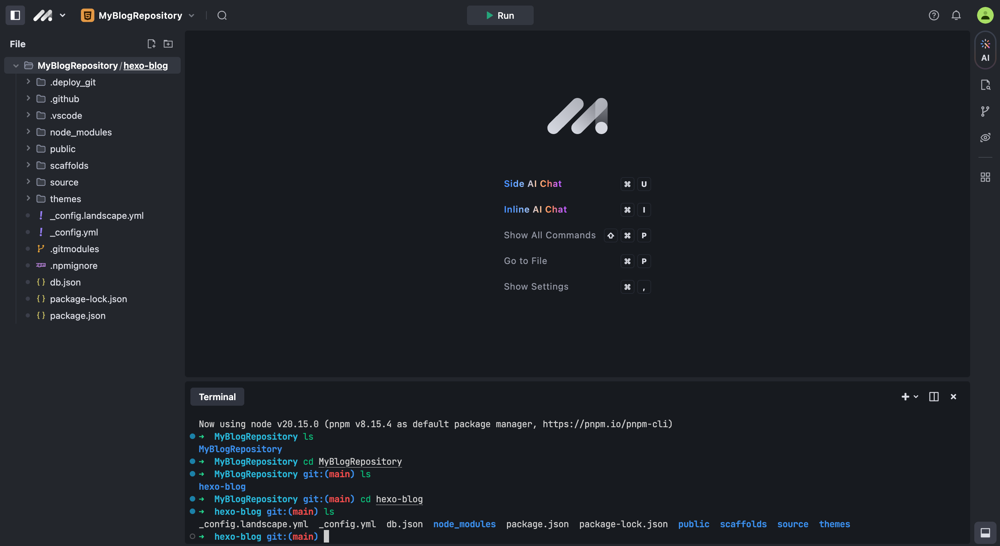
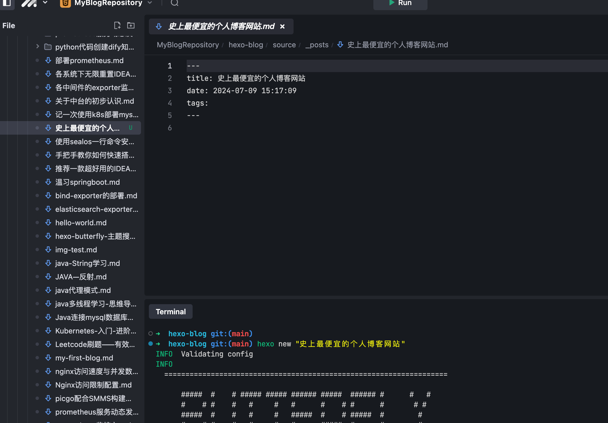
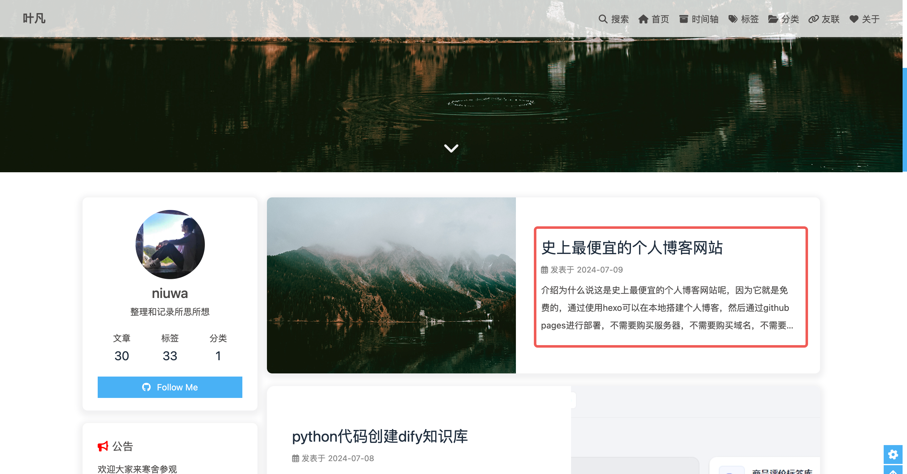

史上最硬核的个人博客网站后台管理平台
介绍
为什么说这是史上最硬核的个人博客网站后台呢，因为就是代码管理的后台，通过使用hexo可以在本地搭建个人博客，然后通过github pages进行部署，不需要购买服务器，不需要购买域名，不需要购买数据库，只需要一台电脑就可以完成个人博客的搭建，而且还可以通过github进行版本控制，方便以后进行博客的更新和维护。
但是！！！
你需要在一个固定的电脑上，搭建hexo、git等等一系列的环境，才能开始写你的博客，一旦脱离了这个电脑，你就无法在这个博客网站上写博文了，虽然我讲构建博客的代码一起放在github的另外仓库进行托管，但是我换电脑，就需要在新电脑上安装必要的环境，才能继续使用，这个安装太过于繁琐，因此我的博文已经很久没有更新了
但是！！！
最近发现了一个平台
就是这个： MarsCode IDE
是它让我可以重新使用自己的博客：https://qi-zou.github.io/
为什么说它拯救了我的博客网站呢，下面我就介绍一下我的操作流程：
操作流程
首先进入 豆包IDE工作台，正常注册登录就行
创建项目，选择从github上导入你的项目，这里我直接选择我的博客网站源代码仓库：
创建完成后，就可以直接进入到你的项目了，在这里你可以看到一个类似于VSCode在线编辑器，相当于提供了一个免费的在线服务器给你
后面就可以按照hexo的教程，去创建文档，写博客，发布，然后就会看到你的博客更新了
1
hexo new "博客文章"

1 | # 清理 |
- 然后就可以通过访问你的博客网站，查看你的博客了，是不是很方便呢

总结
通过使用MarsCode IDE，我重新使用了自己的博客网站，而且不需要在本地搭建环境，只需要一个浏览器就可以开始写博客了，而且还可以通过github进行版本控制，方便以后进行博客的更新和维护，希望这个平台能够帮助到更多的人，让更多的人能够使用自己的博客网站。
本博客所有文章除特别声明外，均采用 CC BY-NC-SA 4.0 许可协议。转载请注明来自 牛蛙JUN！